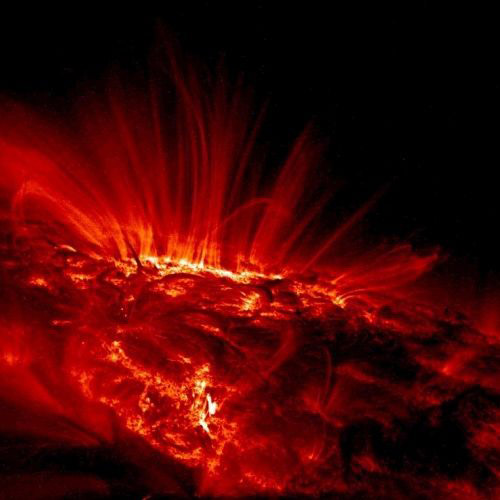

|
|

Сонце 
Меркурій 
Венера 
Земля 
Марс 
Юпітер 
Сатурн 
Уран 
Нептун 
Плутон |
Сонце
У надрах Сонця за температури в десятки мільонів градусів Цельсія та величезного тиску відбуваються так звані термоядерні реакції тисячу кілометрів. Термоядерні реакції продовжуватимуться, поки в ядрі Сонця не вичерпаються запаси Гідрогену. Нині вони складають близько 60 % маси Сонця. Такої кількості вистачить щонайменше на кілька десятків мільярдів років. Наше Сонце – джерело не тільки тепла та світла Його зовнішні зони – фотосфера, хромосфера та корона 
– випромінюють потоки невидимих ультрафіолетових і рентгенівських променів, які впливають на характер процесів у земній атмосфері. Ще багато років тому вчені помітили, що активність Сонця підпорядковується своєрідним циклам, протягом яких вона досягає максимального значення, а потім знову спадає. Це відбувається приблизно кожні 11 років. У роки максимальної сонячної активності збільшується кількість плям та спалахів на поверхні світила, невидиме випромінювання досягає найбільшої інтенсивності. У цей час на Землі виникають магнітні бурі, відбуваються порушення радіозв’язку.
|
 Центральне тіло нашої планетної системи – Сонце. Утіленням Сонця в грецькій міфології був бог Апполон.
Центральне тіло нашої планетної системи – Сонце. Утіленням Сонця в грецькій міфології був бог Апполон.